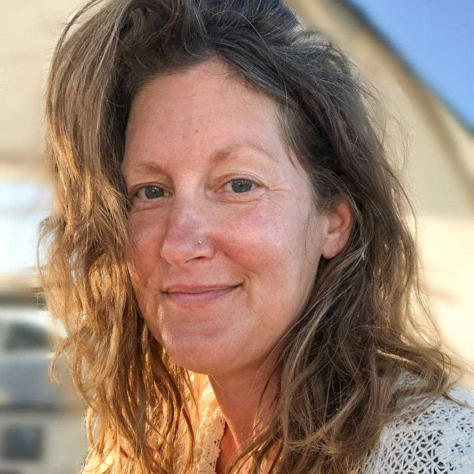

Right now I'm particularly feeling Valerie's letter from V for Vendetta. Thank you, Alan Moore, for this:
I hope that the world turns, and that things get better.
But what I hope most of all is that you understand what I mean when I tell you that even though I do not know you, and even though I may not meet you, laugh with you, cry with you, or kiss you: I love you.
With all my heart.
— Valerie
In this spirit, I’ve made a set of my teachings available here for you.
If you like, I'll whisper in your ear for a while, encouraging you to be with yourself in curious, compassionate, loving awareness. I've been meaning to do this for a while, and the pandemic that is afoot as I write this has brought this to fruition. I hope these practices bring you comfort and peace. My dear friend and student Kirsten Jaglo wrote to me about how she is finding comfort in practice in these wild times and I hope her words will inspire you. She said —
There is so much scary stuff going on that's out of my control, but I have my love. I can always go back to my love.
When teaching a meditation course, I provide my students a combination of written teaching and audio recordings. I make fresh recordings for each course, even of practices that I teach over long years. These are not polished studio recordings. Sometimes you may hear a crackly poppy sound in the background; those are brine shrimp, snapping away on the hull of Rejoice, the sailboat in which I live. I might clear my throat or take a moment to find my way through an idea in speaking spontaneously. I accept these small imperfections and cherish them in the service of presenting a practice that feels real, intimate, lived-in, and accessible.
I believe that practice arises from, aims for, and is best nourished by unconditional love. You will find my tone warm, accepting, encouraging. The gently scolding or mocking tones often used in teaching meditation will not be found here; that is not my way.
Be gentle with yourself as you play and explore these. Sit or lie down as you may wish, but be sure that your body is safe and comfortable. You might draw yourself a nice warm bath or drink a cup of tea as you let my words wash over you. If I am finding something within me a little resistant to turning inward, I might put on a cozy garment, lay out my favorite comfy sheepskin, and lie down. Reclining is fine. If you find yourself falling asleep, that's a great reason to sit up — unless you are listening to these to drift off to sleep! You have my encouragement to be creative in your practice.
Enjoy! Try to make this time with yourself tender and pleasing, not punishing.
I love you.
Teachings
Some very embodied practices
-
Guided yoga nidra / deep relaxation
20 minutes -
Taoist Sunning meditation
15 minutes -
A useful grounding practice
6 minutes
An introduction to meditation
Go deep and spend an hour together
-
Oasis guided meditation
1 hour
Without silence
People who live with anxiety disorders or trauma can sometimes find a meditation with silent space triggering and may prefer a structured practice that does not leave space for the mind to spin in. Here are a couple of practices that do not contain open space; they are just me, speaking to you sweetly.
-
Progressive Relaxation
12 minutes — the delicious beginning of the deep relaxation practice above, trimmed to leave out the period of silent rest -
Balanced Breathing
6 minutes — gently regulating the inbreath and outbreath so that they are balanced can be a lovely practice for self-soothing
All teachings
These recordings are free to enjoy. If you wish to make a gift of thanks in return, that's lovely.
During the COVID-19 pandemic, I’m using the email list I use for announcing my offerings to share teaching as a gift to anyone who wishes it. If you'd like to receive that, drop me a line.
I hope that you find something useful here! When I teach my courses, in addition to receiving materials like these, there are written teachings and conversations. Each person gets to write to the group weekly about their experience with the practice, and each person receives a personal letter from me in return with individual coaching, teaching, and encouragement. The community which forms and the intimate personal support are a wonderful boon. If you'd like to hear about my next course, please let me know.
Bio
I wish I could show you the pure light that is my true being, but here I can only try to say it with words.
I love being.
My parents named me Kristie. I chose Dahlia for myself when James and I married and chose Home for our family name.
I decided to be a writer when I was nine. At different times, I have described myself as a poet, a teacher, a healing artist.
When I speak to myself inside my own mind, I call myself by terms of endearment. If I were to speak to you, I would call you by terms of endearment.
I love.
The exploration and explication of love and freedom are the work of my life.

Offerings
Please reach out to discuss my location for body and energy work, yoga therapy, or spiritual counsel. Phone or email consultation are available from wherever I may be.
I teach Home Meditation Courses by email. If you'd like to hear about these in the future, let me know! Sometimes I don't announce these publicly and only notify my email list.
I write about consciousness and my life at sea on Getting Free.